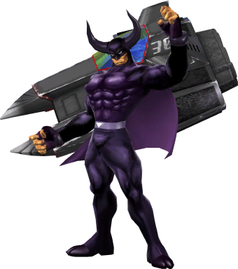
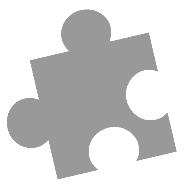

Possible Newcomers
Here we discuss the possible newcomers with the best chances of ending up in Super Smash Bros. Ultimate. We do a brief assessment based on the character's pros and cons, along with their popularity, to see which one has the best chance.
Mario
Paper Mario
Mario has been one of the series that has had the most representation throughout Smash. Now having eight characters after they announced Daisy as a newcomer in Smash Ultimate. And that's only if you don't count the Yoshi and Wario characters, which originate from the Mario series. Still, people are itching to see a new Mario rep and among the top picks is Paper Mario. The Paper Mario series is definitely one of the most beloved Mario spin-offs. He is a pretty popular character, and I wouldn't be surprised if he showed up.
Popularity: 65%
Probability: 20%
Caption Toad
Another top pick is Caption Toad. Having been in four Mario games since Mario Galaxy and staring in his own spin-off game, he is definitely a very relevant character from the Mario series. The main problem keeping Caption Toad from becoming a playable character in Smash is his move set. Since he can't jump, it would be hard to add him as jumping is pretty much necessary in Smash. I'm sure they could find a way around it, but it would just take much more work than other fighters.
Popularity: 75%
Probability: 8%
Geno

Geno, a fan favorite character requested since Melee, probability has the best chance of making it in from the Mario series. Not only does he have a large amount of the popular vote, but he was also intended to be in Super Smash Bros. Melee but was cut due to time constraints. He was also made into a costume in Smash Bros. 4. I would be a little surprised not to see him appear in the new game.
Popularity: 70%
Probability: 50%
Zelda
Skull kid
Skull Kid has been one of the most requested players since the release of Majora's Mask in 2000. Things didn't look good for his chances for a while. However, ever since the game was remastered on the 3DS in 2015, popularity has risen once again, allowing Skull Kid to have a great chance at making the fighter roster.
Popularity: 55%
Probability: 25%
Mask Link
This is definitely a unique character that has garnered a decent amount of popularity and would definitely be an entertaining character to play. However, now that young Link is back, that would make four different Links. Not only that, but they are kind of the same character just with different abilities. I believe, at most, we will see young Link transform into Fierce Deity Link as a final smash, and that's about it.
Popularity: 20%
Probability: 1%
Impa
Impa has been a character that has seemed to have gotten into popularity recently. She is a very significant character from the series and would fit into Smash Bros. really well. Especially, now that they are talking about clone characters, I believe Impa would be an excellent clone fighter for Sheik.
Popularity: 65%
Probability: 30%
Wolf Link

Wolf Link is definitely a popular requested character from the Zelda series, representing the Twilight Princess game. The main problem is that Midna has already been confirmed as an assist trophy, meaning she can't fight with Wolf Link. This lowers his chances drastically because he just isn't the character most people would want for Smash Bros. anymore without Midna.
Popularity: 60%
Probability: 1%
Toon Zelda
Though she was initially planned to appear in Super Smash Bros. Melee back in the day, her relevance has dropped drastically since then. There are much better characters to pick from the Zelda series, and I don't see anyone getting too excited over her inclusion. However, since she was planned to be in the game at one point and would make a good clone character for Zelda, I believe she still has a slight chance to make the roster.
Popularity: 15%
Probability: 4%
Donkey Kong
King K. Rool
Probably the most likely character to make the roster being the most popular character right now. He's been at the top of any smash bros. poll you can find on the internet thought to have even won the official Smash Bros. Fighter Ballot. He fits so many roles we are lacking in Smash Bros. at the moment, such as villain and heavyweight fighters, and has even gotten a costume in Smash Bros. 4. I would be pretty surprised to not see him make the roster.
Popularity: 100%
Probability: 65%
Dixie Kong
Dixie Kong is also a very popular character that would fill multiple character types as well. She would provide another female representative along with a new Donkey Kong rep, which we haven't since Brawl. Due to all the things she brings and her significance in the series, she has a great chance to become a new fighter.
Popularity: 85%
Probability: 40%
Cranky Kong

Though this character has a fair amount of importance in the games and would make a decent playable character, I just don't see them putting him in. First off, he just isn't that desired by fans and is a little forgettable. I also don't see them putting in three playable characters from the Donkey Kong series in one game. I feel he will be a commonly requested character in the future, but for now, I don't think so.
Popularity: 3%
Probability: 4%
Funky Kong
This character has probably the least importance in the game compared to the others. However, since they are focusing on clone fighters and he has had a surge in relevance from the remake of Donkey Kong Country: Tropical Freeze, he as a small shot at making it into the new Smash Bros. game.
Popularity: 8%
Probability: 5%
Pokémon
Decidueye
Decidueye is one of the most popular Pokémon to come out of Sun and Moon and is highly requested by Smash fans. People initially wanted him to fill out the fire/water/grass starters that Pokémon is known for, but then they switched Charizard, the fire starter in Smash, from being his own character back to being a part of Pokémon Trainer. However, fans still see him as a great addition to the Smash roster and would love to see him make it in the game.
Popularity: 70%
Probability: 15%
Tapu Koko
Legendary Pokémon are one of the most significant parts of Pokémon games, and are the most recognizable and liked Pokémon in the series. Not only that, but we haven't had a new legendary Pokémon in a while. Since Sun and Moon are the most current games and are the most relevant, it will probably be a legendary from there. The one that I believe is the most qualified legendary from Sun and Moon is Tapu Koko. He is the most relevant of the legendries with the most screen time and seems to fit into Super Smash Bros. the best.
Popularity: 5%
Probability: 8%
New Pokémon
Usually, Super Smash Bros. likes to show off the latest Pokémon in their games. With a new generation of Pokémon right around the corner I feel we might be getting a new Pokémon that we never seen before just like the situation with Greninja we had in the last game. Granted the game is a little farther away this time around, I feel there could still be a good chance we get a new Pokémon.
Popularity: 70%
Probability: 15%
 Kirby
Kirby
Bandana Dee
This is another prevalent character that is kind of a no brainer for Super Smash Bros. Ultimate. For the past couple of games, he's been a pretty significant character. Usually being the 4th playable character in multiplayer Kirby games. We have the other three in Smash Bros. already. The only one left is Bandana Dee. Plus, it would be interesting to see a fighter with a spear.
Popularity: 90%
Probability: 40%
Galacta Knight
This character is pretty low on the popular side, being just an occasional minor character in the series. However, since Nintendo has been emphasizing clone fighters, I believe he has a shot. He has a very slick design and would be a perfect clone fighter for Meta Knight. After Bandana Dee, I think this character has the best chance to make it in.
Popularity: 5%
Probability: 5%
Metroid
Ridley 

Yes, Ridley is finally confirmed to be coming to Super Smash Bros. He has been a fan request for a long time. Back in the day, he was one of the most popular requests, but as of late, people have been doubting that he would ever make it do to the creator of Smash Bros., saying he was too big to implement. Now that he is confirmed, the hype is back, and I look forward to playing him in the upcoming game.
Popularity: 75%
Probability: 100%
Dark Samus
Dark Samus has always been a popular pick ever since we were told that Ridley was too big to become a playable character. Now that they are focusing on making clone characters a little more this time, she became one of the most request clone fighters. Though she could have her own move set, I believe that she would need to be a clone to make it into the game.
Popularity: 75%
Probability: 30%
Star fox
Krystal 
Though being a pretty popular pick amount Star Fox fans, she too has been confirmed to be an assist trophy. If she wasn't already confirmed to be an assist trophy, I would say she would have a pretty good chance at making the rosters. Though she will not make it as a playable character in this game, I'm sure she will have a great opportunity to be in the next one.
Popularity: 50%
Probability: 0%
Wario
Waluigi

Sadly, the most popular fighter for Super Smash Bros. Ultimate that has had the most attention has been confirmed to be only an assist trophy again. It really is a shame that Waluigi is not a playable character and all we can do is look forward to seeing him the next time around.
Popularity: 100%
Probability: 0%
Ashley
Being the most popular character from the WarioWare games, she has a really good shot at becoming a playable character. The WarioWare games have become the most popular games from the Wario series. So, getting a player from those games is just a matter of time. To be honest, it's kind of surprising we haven't got a character from those games yet. Hopefully, Super Smash Bros. Ultimate will change that with Ashley.
Popularity: 60%
Probability: 20%
F-Zero
Samurai Goroh
Samurai Goroh has been confirmed to return as an assist trophy again. Though many people don't have strong ties with this character, it is still sad to not have a confirmed F-Zero character as a newcomer. Since the series has been dead for many years, it has become increasingly harder to find a good F-Zero representative. Hopefully, we will get one eventually.
Popularity: 3%
Probability: 0%
Black Shadow
Some people really want to see a new F-Zero rep as Caption Falcon has been the only representative from the series since the first Smash Bros. game came out almost 20 years ago. The main problem with adding a new representative would be the moveset. Like Caption Falcon, the moveset would have to be totally original due to F-Zero being a racing series. At this point, I believe Black shadow is the only F-Zero character that has any chance of making it into the roster as he seems like the best fit.
Popularity: 20%
Probability: 15%
Kid Icarus
Hades
Hades would be a great addition to the other Kid Icarus characters and has been kind of popular with fans. The problem is I don't think they are focusing on the Kid Icarus series this time around. After representing them pretty well in the last two games, I feel like this character will fall under the radar.
Popularity: 20%
Probability: 10%
Magnus

Though not much of a popular pick, he would make a decent character for the Kid Icarus series. However, because they don't seem to be focusing on the Kid Icarus series this time around, I don't think he has much of a chance.
Popularity: 4%
Probability: 6%
Fire Emblem
Chrom
The Two main reasons I feel Chrom has a good chance to make it into Super Smash Bros. Ultimate are that one, he would be a good clone fighter. Two because it was kind of stated in the last game that he would be in the next one. On top of that, he is the main character from one of the most popular fire emblem games and is a fan favorite. So, I wouldn't be surprised if he made the roster.
Popularity: 35%
Probability: 35%
Lyn
Though she seems to be one of the most requested fire emblem characters right now. I don't think she is as well-known as others coming from one of the older games in the series. It also seems like Nintendo wants to highlight what's new in the series rather then what's old. So, who knows if she will make it in.
Popularity: 65%
Probability: 15%
New character
Since it seems like Nintendo wants to focus on the new aspects of the series, I feel the likelihood of us getting a new character from the upcoming fire emblem game is pretty high. They definitely want to promote the new game, and what better way than to have the main protagonist be in Smash.
Popularity: 40%
Probability: 20%
Xenoblade
Rex & Pyra
This pair of characters from the newest game in the series is a perfect fit for Smash. They are relevant, important, and a very popular choice for Smash. The only problem with them is that the new Smash Bros. game was in development before the game launched. Since they usually decide the character roster beforehand, it doesn't look too good for them. Hopefully, they have enough time to add Rex & Pyra, at least as DLC characters.
Popularity: 90%
Probability: 36%
Animal Crossing
Tom Nook
Ever since the Animal Crossing series has finally been represented in Smash, I felt the series needed more fighters. The series is definitely big enough to have multiple representatives, and Tom Nook is a very classic and highly recognizable character from the series. Though fans are more excited about fighters from other series, I feel we are due for another character from Animal Crossing. If not this game, then the next.
Popularity: 5%
Probability: 5%
Isabelle

Though Tom Nook is the most recognizable character from the series, lately Nintendo has been pushing Isabelle, a fairly new character. Being a huge part of the last couple of games and the relevance she has garnered recently, I feel she has a better chance at making the roster than Tom Nook.
Popularity: 30%
Probability: 12%
Splatoon
Inkling
Inklings are from a relatively new series of games that launched in 2015. It was surprising to not have the Inklings appear as a DLC character back in Super Smash Bros. 4. Now Inklings are confirmed to be in the next Smash Bros. game, becoming one of the most hyped newcomers.
Popularity: 95%
Probability: 100%
Octoling
Again, we go back to the clone situation. Since it seems like Nintendo is making a good number of clone characters this time around the Octolings, have a small shot at making the roster. Even though they have been pretty relevant lately because of the new Octoling expansion, I don't have high hopes of them making it in. Since the Inklings are already newcomers, I just feel the Octolings will be best reserved for next time.
Popularity: 40%
Probability: 10%
ARMS
Spring Man
Spring man is one of the most requested characters and with good reason. Since he is the mascot for Nintendo's latest new series of games, people will naturally want the main character to represent the new series. However, this series also launched after the start of development for Smash. Let's just hope the same situation with the inklings last game doesn't happen again.
Popularity: 90%
Probability: 35%
Chibi-Robo!
Chibi-Robo
Being one of the last Nintendo series that hasn't been represented in Smash, people are still holding out hope for this character. With barely any popularity and the fact that Nintendo seems like they don't care about the series anymore, I feel Chibbi-Robo is going to have a hard time making it in.
Popularity: 6%
Probability: 4%
Golden Sun
Isaac
Another one of the last Nintendo series that has yet to make it into Smash, Golden Sun, is an RPG series that launched on the Gameboy Advance. Though a little obscure, the series has found a cult following that would really love to see Isaac represented in Smash.
Popularity: 15%
Probability: 12%
3rd Party
Rayman
Rayman has been extremely popular among the fans for a long time. Since Rayman has been appearing on Nintendo Consoles for almost 20 years at this point, it seems very likely Rayman will make the roster this game. Not only that, but Nintendo and Ubisoft seem to be on great terms with each other. Nintendo even letting them use Mario assets in the newest Ubisoft game, Mario + Rabbids Kingdom Battle.
Gameseries: Rayman 
Popularity: 90%
Probability: 45%
Crash

Crash has been a very popular pick from the fans for years. And now that, for the first time ever, all three of the original games are on a Nintendo console, the timing seems almost perfect. Since Crash's popularity is the highest it's been in years, Crash has a decent chance of making the roster in the upcoming game.
Gameseries: Crash Bandicoot
Popularity: 85%
Probability: 20%
Shovel Knight
Everyone seems to want Nintendo to represent indie games in Smash, and what better character than Shovel Knight. He's clearly the most popular indie character right now, with almost everyone wanting him in Smash. The developers of Shovel knight are really close to Nintendo as well. Even allowing them to make an amiibo. The only third-party amiibo made outside of the Smash series.
Gameseries: Shovel Knight 
Popularity: 90%
Probability: 18%
Shantae
Like Shovel knight, she is a very popular indie character, only being slightly less than Shovel Knight. The developers of Shantae also seem really fond of Nintendo having all the game launch exclusively on Nintendo platforms. If there was anyone to represent indie games in Smash, it would be one of these two.
Gameseries: Shantae
Popularity: 88%
Probability: 18%
Simon Belmont
Though we rarely seen him requested in the last game, He has suddenly risen to become a pretty popular character this time around. He's appeared in almost every character leak so far and seems to become more popular each time. I believe he has a decent chance of making it in, just not as much as people would like.
Gameseries: Castlevania
Popularity: 65%
Probability: 20%
Banjo-Kazooie
Banjo-Kazooie has been one of the most popular requests from fans for over a decade now. Since Banjo-Kazooie was born on a Nintendo console, it seems like a perfect fit. Microsoft now owns Banjo-Kazooie, though. However, Xbox CEO Phil Spencer has stated on multiple occasions that Microsoft would love to work with Nintendo, making Banjo-Kazooie's chances of making the roster pretty good.
Gameseries: Banjo-Kazooie 
Popularity: 75%
Probability: 12%
Bomberman
Even though Bomberman has become a fairly common request to be a fighter, he is now confirmed to instead appear as an assist trophy. An assist trophy is still better than nothing, but for those who really want to play as him, they will have to wait for the next game.
Gameseries: Bomberman
Popularity: 20%
Probability: 0%
Amaterasu
Amaterasu isn't that often requested. However, I believe he is an underrated character that people just tend to forget. He would have a great moveset and would fit in smash perfectly. Sadly though, only a few people know about the series. I believe he will be a good contender next game, but he just isn't relevant enough for this one.
Gameseries: Okami
Popularity: 5%
Probability: 3%
Sora
Though he's a prevalent character, especially since the announcement of the next Kingdom Hearts game, many obstacles stand in the way of him getting in. Now that cloud is in the game, Square Enix seems more willing to let their characters into Smash. However, Disney also owns the series, who doesn't like lending out their properties to other companies often.
Gameseries: Kingdom Hearts
Popularity: 85%
Probability: 10%
Shadow
Since they started emphasizing clone characters in the game, Shadow has become one of the requested fighters. Though he seems like a great pick, Smash Bros. has never had more than one character from a third-party series, and I'm not sure they want to make that jump. It seems most of the leaks predict him as a playable character, so I still believe he has a good shot.
Gameseries: Sonic
Popularity: 55%
Probability: 15%
Zero
Last Smash Bros. game Zero seemed to be a fairly common request, but now no one seems to care about him that much anymore. Not only that, but he has the same obstacle as Shadow, being the second character from the Mega Man series. If there was a character that would break that barrier, it would be Shadow, making Zero have even less of a chance.